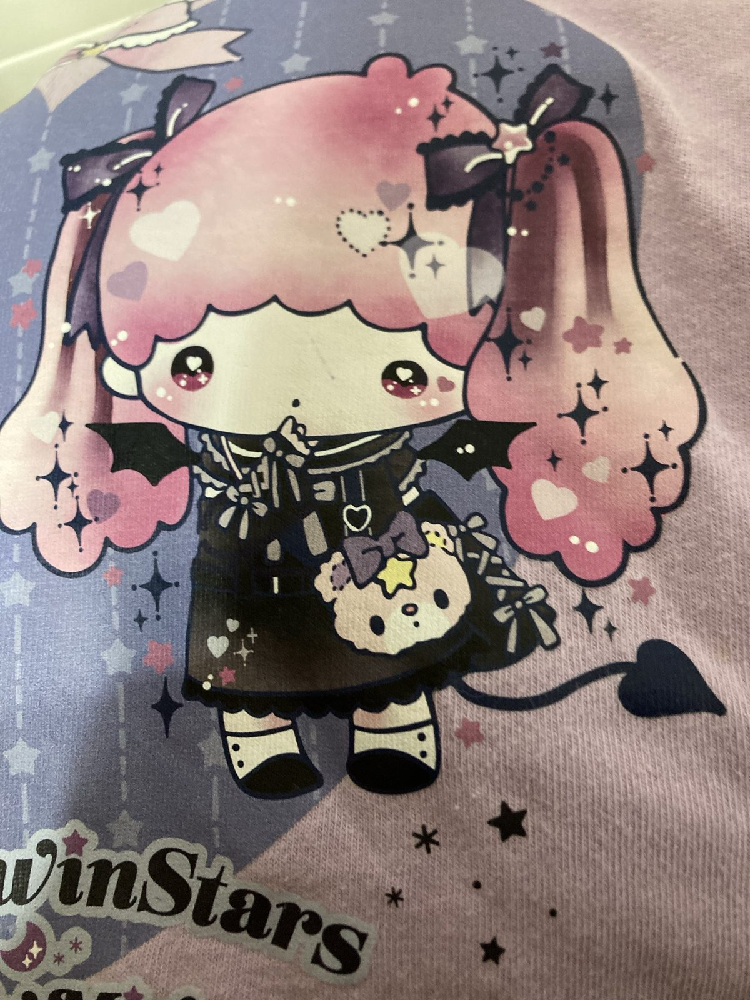

自分が自分の味方になる（あたりまえで難しいこと）
日記自分の中で反発した二つの思考に板挟みになることがよくある。
片付けしなきゃ（思考）とやりたくない（気持ち）。
誰にでもあるけど、人によってそのときの行動は分かれるらしい。
やりたくない気持ちを無視して、嫌々片付ける人。
とことん休んでから、やる気になってやる人。
私は前者だ。いつも自分の気持ちを無視してしまう。
自分の気持ちを無視するのが常習化すると、、タチが悪い。自分がどうしたいのか分からなくなるからだ。そして鬱憤がたまっていく。
しかも、片付けたいじゃなくて、かたづけなきゃ。〜〜しなきゃは、自分のやりたいことて゛はない場合がほとんどだ。
それはかつて、親や学校、環境から学んだ「〜〜であるべき」「〜〜したほうがいい」とかから作られた自分なりの処世術かもしれない。でも本当はやりたくない。
自分のやりたいようにやりたいのに。
自分の気持ちを自分が無視する。
それはやがて「イヤイヤ期」になる。
自分の気持ちが暴走し始めるのだ。
やりたくない。あれもイヤ。これもイヤ。何にもしたくない。
休ませろ。遊ばせろ。自由にしろ。私を無視するな。
これは自分からのSOSだ。聴き逃してはならない。
3食きっちりとるのをやめる。食べたい時に食べたいものを食べる。飲みたいものを飲む。寝たい時に寝る。やりたくなったら片付ける。
欲しいものを買う。捨てたいものを捨てる。
聞きたい音楽を聴く。行きたいところに行く。着たい服を着る。
自分の思うがままに行動する。とても大事なこと。
「ご飯は食べなくちゃいけないし…」「物を捨てるのは勿体ないし…」「お金使っちゃだめだし…」「こんな服年齢に合わないし…」沢山あるだろう。
でもそんなん知るかで押し通す。
あたりまえなようで、難しいこと。
という訳で今日はイヤイヤ期が来てるので自分を甘やかそうと思います。